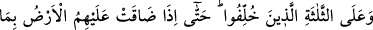
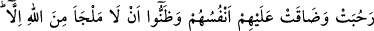
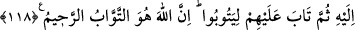
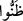

karşı çok şefkatli, çok merhametlidir.” Böylece onları şerîat iksiriyle hakikat âlemine
dönmeye kabiliyetli hale getirir. et-Te’vîlâtü’n-Necmiyye’de bu şekilde zikredilmiştir.
118. Ve geri bırakılan o üç kişinin de tevbesini kabul buyurdu. Bütün genişliğine
rağmen yeryüzü başlarına dar gelmiş, canları sıkıldıkça sıkılmış ve Allah’tan, yine
kendisine sığınmaktan başka çare olmadığını anlamışlardı. Sonra Allah onları
tevbeye muvaffak kıldı ki tevbe etsinler. Çünkü Allah, tevbeyi çok kabul eden, çok
esirgeyendir.
“Ve geri bırakılan” haklarında verilecek hüküm vahiy inene kadar te’hir edilen ve
durumları konusunda kesin bir şey söylenmeyen “o üç kişinin de tevbesini” de Allah
“kabul buyurdu.” Bu üç kişi, şâir Ka‘b b. Mâlik, Mürâre b. Rebî’ Anberî ve Hilâl b.
Ümeyye Ensârî’dir.
“Bütün genişliğine rağmen yeryüzü başlarına dar gelmiş,” yâni Onların durumu
yeryüzü başlarına dar gelinceye kadar te’hir edilmişti. Selam alıp verme şeklinde de
olsa müslümanlar kendileri ile konuşmaktan yüz çevirdikleri için yeryüzü geniş
olmasına rağmen onların başlarına dar gelmişti. Onlar bu hal üzere ölmekten ve
Peygamber (a.s.)’ın ve müminlerin cenaze namazlarını kılmamalarından korkuyorlardı.
“Bütün genişliğine rağmen yeryüzü başlarına dar gelmişti” ifadesi, onların içinde
bulundukları şaşkınlık ve tedirginliğin şiddetini anlatmak için yapılmış bir temsildir.
Sanki hiçbir yer onlara mesken olamıyor, hiçbir ev de huzur ve sükun vermiyordu.
“Canları sıkıldıkça sıkılmış” Kalpleri yalnızlık korkusu ve keder ile o derece dolu
idi ki kalplerinde rahat, ünsiyet ve sevinç namına bir şey kalmamıştı. Âyette onların
rahat ve sürûrlarının kalmadığının ifade edilme şekliyle rahat ve sürûrlarının
kalmamasının bizzat kendilerinin yok olması mesâbesinde olduğuna dikkat çekilmiş
olmaktadır.
“Ve Allah’tan, yine kendisine sığınmaktan başka çare olmadığını anlamışlardı.”
Allah Teâlâ’nın gazabından yine O’na istiğfar etmekten başka sığınma ve kurtuluş
olmadığını anlamışlar ve kesin olarak bilmişlerdi.
Âyetteki “
(zannettiler)” fiili, “anladılar, bildiler” mânâsında kullanılmıştır. Çünkü
Allah Teâlâ bu vasfı onları övgü ve sena sadedinde kullanmıştır. Övgü ise ancak onların
bunu bilmeleri durumunda gerçekleşir.
Yani, onlar şunu anladılar ki Allah’ın gazabından hiçbir kimseye iltica edilemez,
ancak ve ancak O’na edilir.